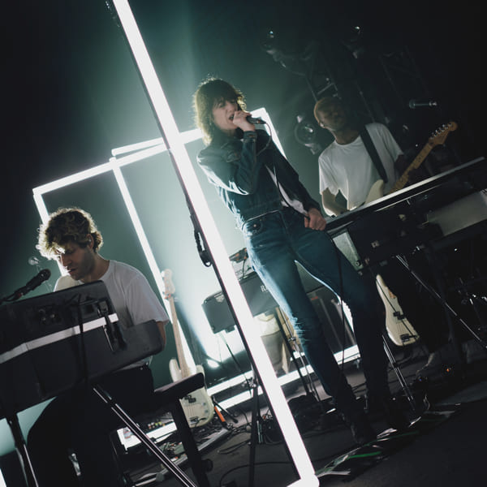
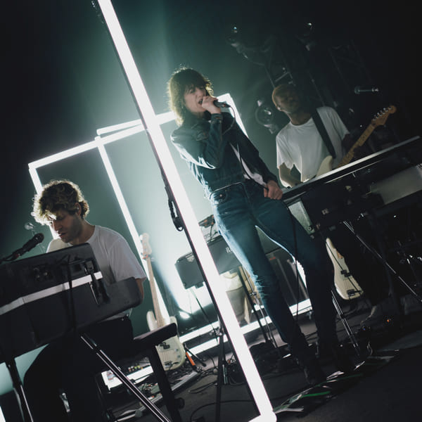

 Apple
2022 – PresentSenior Front End Developer
I collaborate closely with design teams to develop prototypes, tooling, and interactive web experiences in order to tell the story of the products and services that live on Apple.com.
I’m a pixel perfectionist
with animation
skills to boot.
and I’d like to
work with you.
I collaborate closely with design teams to develop prototypes, tooling, and interactive web experiences in order to tell the story of the products and services that live on Apple.com.
A minimal WebGL library and 3D engine created to learn the essentials of computer graphics concepts and to limit the need for larger 3D libraries.
View on GitHub, SandboxA custom animation library created not only as a learning experience to further understand animation, but also to power future experiences without relying on third-party code.
View on GitHub, DirectorI designed and developed the personal portfolio website for designer and illustrator Danielle Toledo, and was awarded the Honorable Mention and Mobile Excellence awards by AWWWARDS.
Visit anotherdei.comI developed the frontend for various hospitals and non-profit organizations. I also mentored juniors on the frontend team, and provided technical and problem solving assistance for the entire team.
I developed e-commerce and demand generation websites, scoped and implemented platform integrations and custom applications, and collaborated on design work for rebranding and unique frontend experiences.